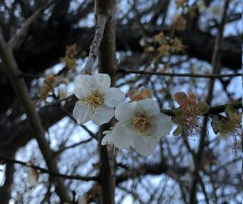

うるがいの話 ある日
最新: 御願解き【うるがいの話 ある日】とは 一日だけのプログです
『うるがいの話』の最新一日だけのプログで、通信料が少なく経済的だ。カニの画像をクリックすると全ての日付が載る『うるがいの話』サイトを表示します
|
|
【うるがいの話】 うるがい(ｳﾙｶﾞｲ urugai)とは、『もずくがに』の名前でとても大きくなります。 |
|---|---|
|
|
【カミマヤーの話】 猫のことを方言でマヤーといいます。カミマヤー（kamimayaa）とは、神の猫のことです。 |
|
【タナガーの話】 たながー（ﾀﾅｶﾞｰtanagaa）とは手長えびのことで、何種類かあり大きいのは車 エビぐらいになります。 |

|
【ぶながぁの話】 ぶながー(bunagaa)とは、赤い髪の毛、赤い身体、そして身長は１ｍ２０ｃｍ ぐらい、川の蟹を食べているの目撃された。場所は沖縄県国頭郡大宜味村のと ある村僕の隣近所に住んでいる爺さんから、聞いた話です。 |
|
|
【ギーマの話】 ギーマ(giima)とは、山原の里山に咲くスズランに似た、 花を付けます。実は食べられます、 気が付くと口の周りが紫になっています。 |
2022年01月26日 (水）御願解き
16:36
御願解き（ウグァンブトゥチ）の御願では、①一年の御願を叶えていただいた
ことへの感謝、②今日でこの一年の祈願を請い下げること、③厄を祓い果報の
みを招き入れる祈願、が中心です。
ヒヌカンは、毎年旧暦の12月24日には一度天へ戻るため、この日はヒヌカンを
お見送りする沖縄の御願行事が行われ、その前に行われるのが一年の拝みを解
く「ウグァンブトゥチ（御願解ち）」です。
今日は旧暦１２月２４日（大安）御願解きの期限らしい。旧暦のクリスマスイ
ブである。ヨメがやらず、なぜか私がするのである。ネットでヒヌカンの扱い
が載っていたので読んでみると、・・うふふ、全然、全然である。いま、ラジ
オでもウガンの話している。サン（ススキを三本束ねたもの）には、今回はク
ワン草の葉も利用する。ユーチューブの音割れで哀れしている今、動画編集の
副業のための『動画編集研修』の募集があった。動画編集アプリ「Adobe
Premiere Pro」を使うとのこと。なんと、グッとタイミング、パソコンの性
能がアプリの動作条件にやや足りないが、エントリする。

１６時３３分 ビットコインの総資産 ￥１２、３２２↑おお